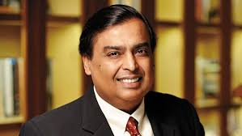

THE SUCCESS STORY OF Mukesh Ambani
Mukesh Dhirubhai Ambani
He is an Indian billionaire business magnate,and the chairman,managing director,and largest shareholder of Reliance Industries Ltd.(RIL),a Fortune Global 500 company and India's most valuable company by market value.Until April 2020,Mukesh Ambani was the richest man in Asia.
Creating a Great Leadership Legacy:The Success Story of Mukesh Ambani, the Game Changer of India’s Business Model
“My mother! She is an accomplished lady who taught me and my siblings’ wisdom, tolerance, generosity, patience, and responsibility towards not only our family but the entire nation too”
Mukesh Dhirubhai Ambani, a True Champion, and a Legendary Entrepreneur is THE FACE OF MODERN Indian Industrialists. The Chairman and Managing Director of Reliance Industries running Ambani’s real legacy is a “role model for Young Entrepreneurs”. Mukesh, the owner of the largest private sector, and the Fortune 500 Company in India has successfully set up the path towards the development of Modern India.
The recent announcement of the biggest foreign investment by Japan’s Softbank in Reliance Jio and Saudi giant Aramco in Reliance Industries’ refining and petrochemical business is a lesson to Young Entrepreneurs how to take advantage of the opportunities by taking some risks in life. His meticulous plan to deleverage business by selling stakes shows his visionary leadership. Mukesh always believes “Investment in excellence is Investment in Future”.
Mukesh’s business styles and strategies give an impression of his walking in his father’s Dhirubhai Hirachand Ambani’s footsteps while following his ideals and framing an example for his next generation. The son of a rich noble family got the business management skills, revolutionary attitude, faith in teamwork, and a helping attitude from his father while disciplining, determination, and Nationalist attitude from his mother Kokilaben Ambani to whom he was the closest among family members.
“All of us, in a sense, struggle continuously all the time because we never get what we want. The important thing which I’ve learned is how you do not give up because you never succeed in the first attempt.” Mukesh Ambani
Mukesh Ambani, a 62-year-old business tycoon, owning the property of about $50 billion, featured on the Forbes billionaire list as the 13th richest businessman, is among the World’s Top Billionaires and the sole Indian among the top wealthiest person. Although he captured the attention of business fraternity in the Year 2000 when he received Ernst & Young Entrepreneur of the Year, he was passionate about Business and Entrepreneurship since childhood. Even though he is India’s wealthiest individual, he is known for being “humble-minded”.
Mukesh always got full support from his wife Nita Ambani who is the soul of the family stabilizing her multiple roles as a wife, mother, bhabhi at home to an educationist, humanitarian to sports ambassador, and several other.
Until the 1970s, Mukesh Ambani’s family lived in a two-room house in Bhuleshwar, Mumbai, but later Dhirubhai bought a 14-floor building (Sea Wind) in the Colaba area of Mumbai where Mukesh and other members of the Ambani family lived for many years. Now Mukesh Ambani lives with his family in the world’s most expensive 400,000-square- foot building ‘Antilla’ in South Mumbai. Mukesh‘s Reliance Industries business is spread across sectors such as refining, petrochemical, oil, gas, and retail. Along with the industry, he also owns the Mumbai Indians Twenty-Twenty team, a cricket team under the Indian Premier League (IPL). He is an open-minded person and welcomes new people and innovative ideas.
Apart from his company, Mukesh Ambani has also been a member of various committees, chairman and board of reputed companies at different times. He has also served as the Chairman of the Board of the Indian Institute of Management Bangalore, India’s premier management institute.
Mukesh is the elder brother of Anil Ambani, the son of the late Dhirubhai Ambani, the founder of Reliance and the chairman of the Reliance Anil Dhirubhai Ambani Group. MR. AMBANI came into the world on April 19, 1957, in Aden, Yemen. He also has two sisters named Dipti Salgaoncar and Nina Kothari, and a younger brother, Anil Ambani, an Indian Business Tycoon, and Chairman of Reliance Group. He always kept his friends & family around to bring positivity in life.
Mukesh completed his early education at Hill Grange High School in Peddar Road, Mumbai. Here Mukesh‘s close friend Anand Jain was his classmate and his younger brother Anil Ambani also studied in this school. From schooldays only he was an ordinary individual who dreamt big and welcomed challenges.
Mr. Mukesh D. Ambani, a graduate in Chemical Engineering from the Institute of Chemical Technology, Mumbai, started an MBA program from Stanford University in the US. In 1980, when the Indira Gandhi government started the PFY (Polyester filament yarn), then Reliance also submitted its claim for the license and succeeded in getting licenses between Tata, Birla and 43 more veterans. Dhirubhai Ambani called Mukesh from his studies in between the MBA for the construction of a PFA (Polyester filament yarn) factory. He left his studies and came to India and started building the factory in the year 1981 helping his father run the family business.
Under the charismatic leadership of Mukesh Ambani, Reliance established ‘Reliance Infocomm Limited (now Reliance Communication Limited), one of the largest telecom companies in India.
Mukesh played a significant role in establishing the world’s largest petroleum refinery at Jamnagar (Gujarat) at the basic level. The capacity of this refinery was 660,000 barrels per day (30 million tonnes per year) in 2010. The refinery, built with an investment of about Rs 100000 crore, has petrochemical, power generation, port, and related infrastructure.
Mukesh Ambani, the face of sustainable Indian business for the last four decades, powerfully represents a strong image of the Indian business sector that is cosmopolitan, advancing and progressive. He will always remain the top business mentor and the idol of every Young Entrepreneur in India who aspires to emulate his capabilities and establish a name for him in the competitive business world.
Mukesh Ambani has 5 current jobs including Managing Director at Reliance Retail, Chairman and Managing Director at Reliance Industries, and Chairman & MD at Reliance Jio.
 Reliance Retail (Managing Director )
Reliance Retail (Managing Director ) Reliance Industries(chairman and Managing Director)
Reliance Industries(chairman and Managing Director) Reliance Jio (Chairman & MD)
Reliance Jio (Chairman & MD) Reliance Digital (Owner and Founder )
Reliance Digital (Owner and Founder )Awards and honors
| Year of Award or Honor | Name of Award or Honor | Awarding Organization |
|---|---|---|
| 2000 | Ernst & Young Entrepreneur of the Year | Ernst & Young India |
| 2010 | Global Vision Award at The Awards Dinner | Asia Society |
| 2010 | Business Leader of the Year | NDTV India |
| 2010 | Businessman of the Year | Financial Chronicle |
| 2010 | School of Engineering and Applied Science Dean's Medal | University of Pennsylvania |
| 2010 | ranked 5th-best performing global CEO | Harvard Business Review |
| 2010 | Global Leadership Award | Business Council for International Understanding |
| 2010 | Honorary Doctorate (Doctor of Science) | M. S. University of Baroda |
| 2013 | Millennium Business Leader of the Decade at Indian Affairs India Leadership Conclave Awards 2013 | India Leadership Conclave & Indian Affairs Business Leadership Awards |
| 2016 | Foreign associate, U.S. National Academy of Engineering | National Academy of Engineering |
| 2016 | Othmer Gold Medal | Chemical Heritage Foundation |